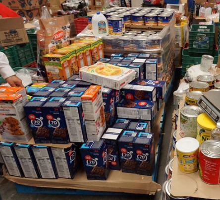

¿Quiénes somos?
MACRA es un proyecto dedicado a la recolección de alimentos como donaciones voluntarias para su entrega en las comunidades más necesitadas, apoyando a aquellas familias en situación de vulnerabilidad alimenticia.
Esto es posible llevarlo a cabo gracias a la ayuda y colaboración de nuestros aliados en logística, sin olvidar a aquellas personas que han brindado su apoyo con su donación que es 100% voluntaria.
A continuación se puede apreciar nuestra gráfica que muestra los resultados de nuestra última entrega de víveres, donde se expone las mayores cantidades de alimentos y su clasificación.
